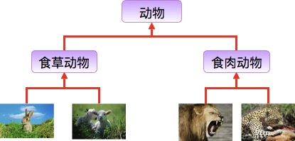

Java 継承
継承の概念
継承は Java のオブジェクト指向プログラミング技術の基盤です。階層的なクラスを作成できるからです。
継承とは、サブクラスが親クラスの特徴と動作を継承し、サブクラスのオブジェクト（インスタンス）が親クラスのインスタンスフィールドとメソッドを持つこと、またはサブクラスが親クラスからメソッドを継承して、サブクラスが親クラスと同じ動作を持つことを指します。
生活の中の継承：

ウサギとヒツジは草食動物類に属し、ライオンとヒョウは肉食動物類に属します。
草食動物と肉食動物は、さらに動物類に属します。
したがって、継承が満たすべき関係は is-a です。親クラスはより一般的で、サブクラスはより具体的です。
草食動物と肉食動物はどちらも動物に属しますが、両者の属性や行動には違いがあります。そのため、サブクラスは親クラスの一般的な特性を持ちつつ、自身の特性も持ちます。
クラスの継承形式
Java では、extends キーワードを使用して、あるクラスが別のクラスから継承されていることを宣言できます。一般的な形式は次のとおりです：
クラスの継承形式
なぜ継承が必要か
次に、例を通してこの要件を説明します。
動物クラスを開発します。動物はそれぞれペンギンとネズミです。要件は次のとおりです：
- ペンギン：属性（名前、id）、メソッド（食べる、寝る、自己紹介）
- ネズミ：属性（名前、id）、メソッド（食べる、寝る、自己紹介）
ペンギンクラス：
ネズミクラス：
この2つのコードから分かるように、コードに重複があり、コード量が多くて冗長で、保守性も高くありません（主に、後で修正が必要な場合に多くのコードを修正する必要があり、エラーが発生しやすいという形で現れます）。この2つのコードの問題を根本的に解決するには継承が必要です。2つのコード内の重複部分を抽出して1つの親クラスを作成します：
共通親クラス：
この Animal クラスは親クラスとして使用できます。ペンギンクラスとネズミクラスがこのクラスを継承すると、親クラスの属性とメソッドを持つことになり、サブクラスに重複したコードは存在せず、保守性も向上し、コードもより簡潔になり、コードの再利用性が高まります（再利用性とは、何度も使用でき、同じコードを何度も書く必要がないことです） 継承後のコード：
ペンギンクラス：
ネズミクラス：
継承の種類
注意すべき点は、Java は多重継承（複数のクラスを継承すること）をサポートしていませんが、多段継承はサポートしています。

継承の特性
サブクラスは親クラスの private 以外の属性とメソッドを保持します。
サブクラスは自身の属性とメソッドを持つことができます。つまり、サブクラスは親クラスを拡張できます。
サブクラスは独自の方法で親クラスのメソッドを実装できます。
Java の継承は単一継承ですが、多段継承が可能です。単一継承とは、1つのサブクラスが1つの親クラスしか継承できないことです。多段継承とは、例えば B クラスが A クラスを継承し、C クラスが B クラスを継承する場合、B クラスは C クラスの親クラスであり、A クラスは B クラスの親クラスである、という関係になります。これは Java の継承が C++ の継承と異なる点です。
クラス間の結合度を高めます（継承の欠点です。結合度が高いとコード間の関連が強くなり、コードの独立性が低くなります）。
継承キーワード
すべてのクラスは java.lang.Object を継承します。クラスが2つの継承キーワードを使用しない場合、デフォルトで Object（このクラスはjava.langパッケージ内にあるため、import は不要ですimport）という祖先クラスを継承します。
extendsキーワード
Java では、クラスの継承は単一継承です。つまり、1つのサブクラスは1つの親クラスしか持てないため、extends は1つのクラスしか継承できません。
extends キーワード
implementsキーワード
implements キーワードを使用すると、Java に間接的に多重継承の特性を持たせることができます。使用範囲はクラスがインターフェースを継承する場合で、複数のインターフェースを同時に継承できます（インターフェース間はカンマで区切ります）。
implements キーワード
super と this キーワード
super キーワード：super キーワードを使用して親クラスのメンバーにアクセスし、現在のオブジェクトの親クラスを参照できます。
this キーワード：自分自身を指す参照です。現在のオブジェクト、つまりそのメソッドまたはコンストラクタが属するオブジェクトインスタンスを参照します。
例
出力結果は：
animal : eat dog : eat animal : eat
final キーワード
final は変数（クラス属性、オブジェクト属性、ローカル変数、仮引数を含む）、メソッド（クラスメソッドとオブジェクトメソッドを含む）、およびクラスを修飾するために使用できます。
final は「最終的な」という意味です。
final キーワードを使用してクラスを宣言すると、そのクラスは最終クラスとして定義され、継承できなくなります。また、メソッドを修飾する場合は、そのメソッドはサブクラスでオーバーライドできません：
クラスの宣言：
final class 类名 {//类体}-
メソッドの宣言：
修饰符(public/private/default/protected) final 返回值类型 方法名(){//方法体}
注記：final で定義されたクラスでも、その属性やメソッドは final ではありません。
コンストラクタ
サブクラスは親クラスのコンストラクタ（コンストラクタメソッド、またはコンストラクタ関数）を継承しません。単に呼び出すだけです（暗黙的または明示的に）。親クラスのコンストラクタにパラメータがある場合、サブクラスのコンストラクタで明示的にsuperキーワードを使用して親クラスのコンストラクタを適切なパラメータリストとともに呼び出す必要があります。
親クラスのコンストラクタにパラメータがない場合、サブクラスのコンストラクタでsuperキーワードを使用して親クラスのコンストラクタを呼び出す必要はなく、システムが自動的に親クラスの引数なしコンストラクタを呼び出します。
例
出力結果は：
------SubClass 类继承------ SuperClass() SubClass() SuperClass(int n) SubClass(int n): 100 ------SubClass2 类继承------ SuperClass(int n) SubClass2() SuperClass() SubClass2(int n): 200その他の拡張